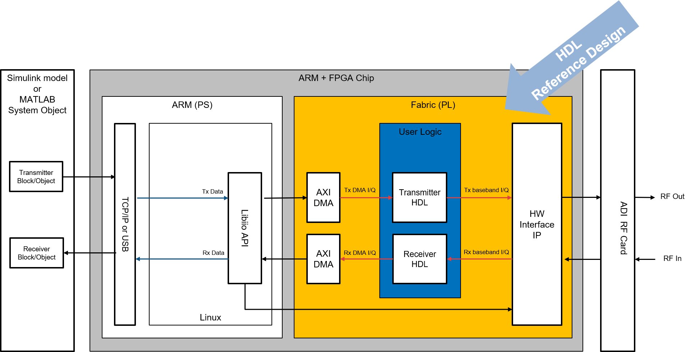

HDL Targeting with HDL-Coder
Transceiver Toolbox supports the IP Core generation flow from MathWorks which allows for automated integration of DSP into HDL reference designs from Analog Devices. This workflow will take Simulink subsystems, run HDL-Coder to generate source Verilog, and then integrate that into a larger reference design. The figure below is a simplified block diagram of a SoC (Fabric+ARM) device, where specialized IP are inserted into the receive and transmit datapaths. This is supported on specific FPGA families and transceiver based reference designs, and is built on the Zynq HDL-Coder workflow and the HDL Coder Support Package for Xilinx Zynq Platform.

Simplified block diagram of a SoC (FPGA fabric + ARM) device. Simulink-generated IP is inserted into the receive and transmit datapaths of an ADI reference design.
Recommended Review
Prerequisites
Targeting requires the HDL generation dependencies described in Installation:
Xilinx Vivado and Vitis, version matched to your toolbox release (for example, Vivado/Vitis 2022.2 for the R2023b-based release)
Simulink, HDL Coder™, and the HDL Coder™ Support Package for Xilinx Zynq Platform
Targeting is only available for specific transceiver and FPGA carrier combinations. See the support table on the home page — the Targeting column lists the boards and minimum releases that support this flow.
Getting Started
The targeting flow takes a Simulink subsystem (your DSP “DUT”), runs HDL Coder to generate Verilog, and integrates it into an ADI HDL reference design to produce a bitstream you can run on hardware. The steps below outline the user-facing workflow. For a detailed look at what happens internally — the generated TCL scripts, net trimming, and IP insertion — see HDL Workflow.
1. Point MATLAB at your Xilinx tools
Register Vivado with HDL Coder so it can drive the build. Adjust the path for your installation:
hdlsetuptoolpath('ToolName','Xilinx Vivado', ...
'ToolPath','/opt/Xilinx/Vivado/2022.2/bin/vivado');
2. Open a model
Start from one of the worked examples under trx_examples/targeting/:
frequency-hopping— frequency hopping on the ADRV9361-Z7035loopback-delay-estimation— loopback delay estimationtuneAGC-ad9361— AGC tuning for the AD9361
or create your own model. The portion of the algorithm to be implemented in fabric must live in a single subsystem (the HDL DUT), with its inputs and outputs mapped to the transceiver datapath (for example, the AD9361 ADC/DAC data and valid interfaces).
3. Select a reference design
Open the HDL Workflow Advisor on your DUT subsystem (right-click the subsystem → HDL Code → HDL Workflow Advisor, or run hdladvisor). Set:
Target workflow: IP Core Generation
Synthesis tool: Xilinx Vivado
Reference design: the ADI design matching your board and datapath — Rx, Tx, or Rx & Tx (for example, AnalogDevices ADRV9361-Z7035)
Each supported board registers its reference designs through the HDL Coder board and reference-design plugins shipped with the toolbox under hdl/vendor/AnalogDevices/+AnalogDevices/.
4. Generate IP, build, and (optionally) program
Step through the Workflow Advisor tasks. HDL Coder will:
generate Verilog from your DUT subsystem,
build the reference-design Vivado project and trim the nets where your IP will be inserted,
insert and connect your generated IP, and
run synthesis and generate the bitstream.
To re-run the workflow without re-entering settings, use a workflow script. The examples ship a generated hdlworkflow.m for exactly this — it configures an hdlcoder.WorkflowConfig and calls hdlcoder.runWorkflow:
hWC = hdlcoder.WorkflowConfig('SynthesisTool','Xilinx Vivado', ...
'TargetWorkflow','IP Core Generation');
hWC.ProjectFolder = 'hdl_prj';
hWC.RunTaskGenerateRTLCodeAndIPCore = true;
hWC.RunTaskCreateProject = true;
hWC.RunTaskBuildFPGABitstream = true;
hWC.RunTaskProgramTargetDevice = false; % set true to program the board
hdlcoder.runWorkflow('frequency_hopping/HDL_DUT', hWC, 'Verbosity', 'on');
Once built, the bitstream and supporting files can be loaded onto the target (see Connecting To Hardware).